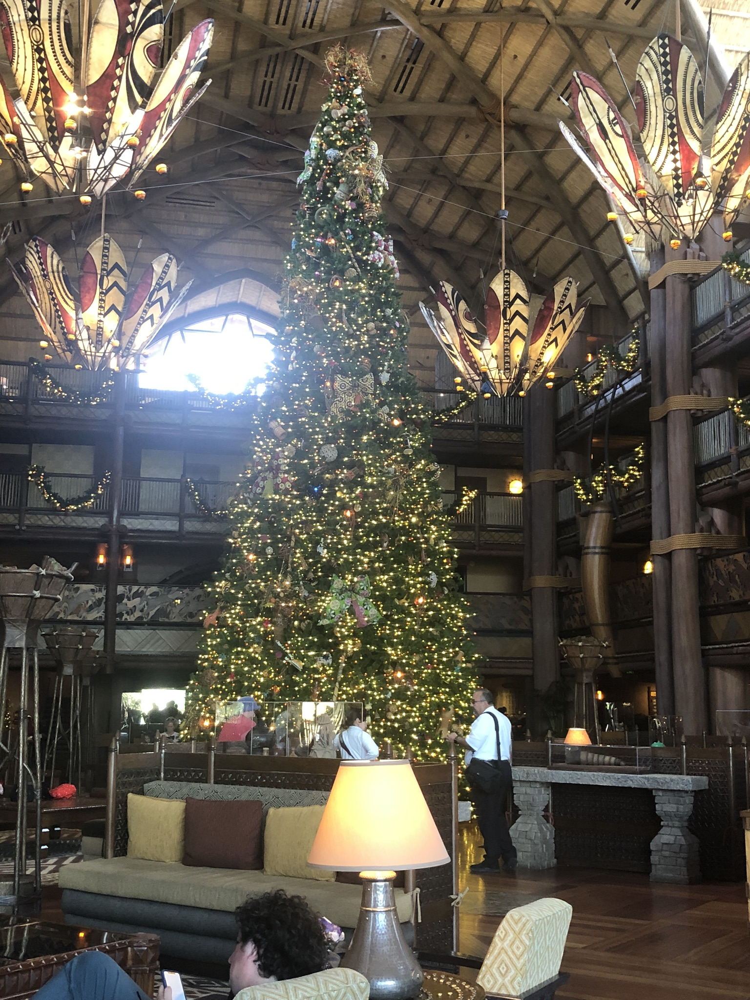

There is so much choice when it comes to booking a hotel at Disneyworld. There are many hotels located in the vicinity of Disney,
but if you want to feel part of the magic, on-site hotels are a must! There are many advantages to staying on-site. These include magic hours which
give access to the parks prior to other guests and evenings where you can stay and play late! Disney hotels are close to the magic with a
variety of transport methods to get you where you need to go. Each resort is uniquely themed and well worth a visit even if you aren't staying on-site.
Take a look at the hotel links for further information.
Dining at Disney does not have to be all about burgers and chicken nuggets. Disney has fast food options and a number
of fine dining restaurants. The Grand Floridian Resort has 3 fine dining restaurants Narcoosees
is a fish restaurant over looking Seven Seas Lagoon, Citricos serves american themed dishes, while Victoria and Alberts serves high end fine dining. Jiko
at Animal Kingdom Lodge specialises in South African Flavours and fine Wines.
Character dining is also a must with Chef Mickeys
at the Contemporary resort and Ohana
at the Polynesian resort where you can meet Lilo and Stich!
There are dining options to suit all tastes and for those of you that enjoy cocktails,
no holiday is complete without a trip to Trader Sam's Grog Grotto!